01
Her kan mine rejse gennem Photoshop, fotografering, webdesign og prototype ses.
03
Se nærmere for kodning af et website for folketingsmedlem; Monika Rubin! HTML/CSS kodning, og repsonsivt design.
02
Konceptudvikling af albumcover til en kendt popsanger; Rihanna. Se med her!
04
Cirkulært økonomi, bæredygtigt brand på SoMe platforme. Videoproduktion og redigering, samt landingpage kan ses her!
EKSKURSION, FOTOSAFARI OG MEGET MERE...
Tag med på en tur i København, hvor vi i grupper udfordrede vores fotograferingsevner og dykkede ned i kunsten at bruge vinkler, skygger og refleksioner. Essensen er: Hvordan kan man gennem fotografi formidle en historie ved hjælp af farver, vinkler og skygger?
CASE RESUME
Formål
Finde et eller flere motiver der kan karakteriserer mig med tre ord.
Det skal have en form for fortælling, og skal kunne redegøres til hvorfor netop det motiv beskriver mig, ved eksempelvis farverne, vinklen eller stemningen på billedet.
Proces
Gik en tur rundt i København i grupper, og fik taget noget billeder som vi senere vil arbejde med. Alle billeder blev delt med gruppen.
Efterfølgende fik vi lov til at kigge på billederne, og snakke lidt om hvilken stemning de gav. Her havde jeg tre der sagde noget for mig.
Resultat
Eftersom at få arbejdet med de forskellige billeder, og legede lidt med Adobe Photoshop, kom jeg frem til et resultat jeg var stolt af.
Inspireret af en lille cafe/bar på Reffen, som hed Moosehearts, fik jeg dannet noget jeg synes der repræsenteret mig mest.
PROCES
Til at starte med, havde jeg tre billeder jeg synes jeg ville arbejde nærmere med til opgaven. Da opgaven havde et krav om at kunne visualisere tre ord der repræsenterede os selv, stod jeg lidt og tænkte om hvilken der bedst vil passe til mig. Da opgaven også handlede om at kunne lære lidt Photoshop, altså at fjerne nogle elementer fra billedet og evt. tilføje noget der tidligere ikke var på billedet, sad jeg lidt og reflekterede over hvilken der vil passe mig bedst.
 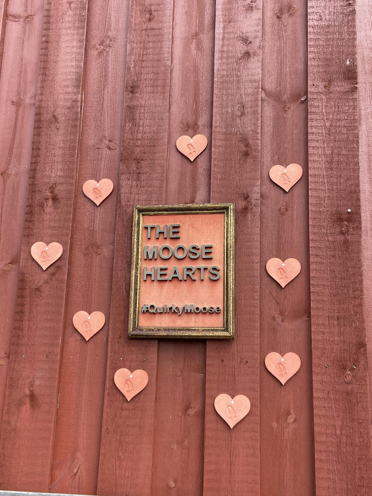
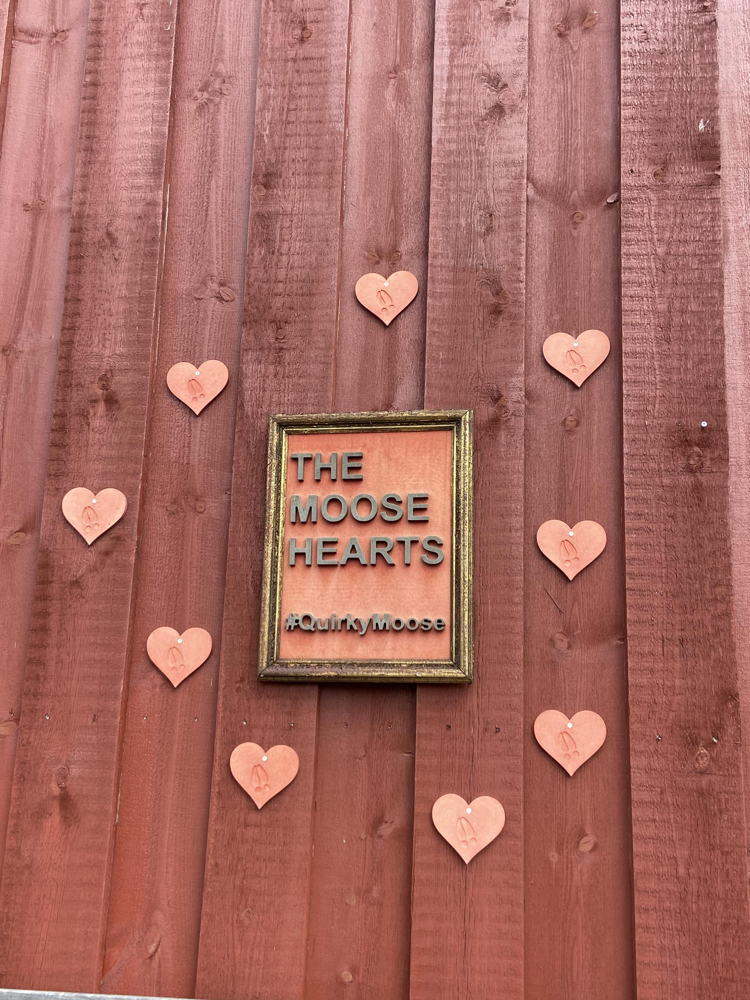
Jeg endte med at vælge billedet yderst til højre, altså skiltet "The Moosehearts". Grundet dette valg, vil jeg indrømme var hjerterne på billedet, som jeg følte vil passe min personlighed bedst. Som vist her, legede jeg med billedet på Adobe Photoshop, og fjernede "hearts" og skrev "tash" i stedet. Det gjorde jeg ved at tage de bogstaver der allerede var på billedet, som gav billedet en lidt humoristisk tilgang. Her tilføjede jeg også lige en hat med overskæg på bogstavet 'T', som understøttede den vibe jeg gav billedet.
RESULTAT
Her kan man se before and after af mit arbejde. Til højre er før billedet, som også er lysere i farven end mit endelige resultat.
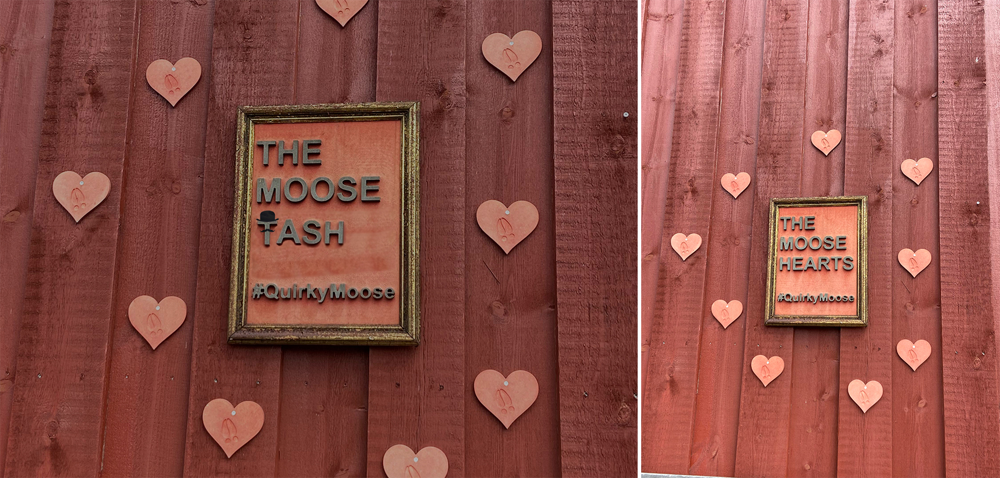WEBDESIGN OG PROTOTYPE MED FIGMA
Wireframes, AIDA-modellen og så meget mere. Her dykkede vi ned i en verden af digital design, hvor vi gruppevis fik lov til at designe ved hjælp af metoder, samtidigt med at prototype en hjemmeside til events for nye studerende i København. Et event med musik i parken, kunne det være en god idé?
CASE RESUME
Formål
At lave en hjemmeside som vil informere nye studerende i København om nogle events, så man kunne komme ud og møde andre nye studerende.
Idéen er, at man som ny studerende får lov til at møde nogle der har de samme interesser som en selv, og få nye venner så man ikke starter blindt på en uddannelse, men at man har den sociale omkreds med sig.
Proces
En kort verbalt brainstormingsfase hvor vi alle i gruppen kom med vores idéer til projektet. Der blev snakket om CPH Skills, Koncert, Loppemarket og drive-in bios. Derefter stemte vi, og kom frem til Musik i Parken.
Vi stilte nogle spørgsmål som hvad, hvem og hvornår som skulle hjælpe med at komme frem til vores fokuspunkter i projektet. Design og protoype fik vi gjort gennem Figma, og gjorde brug af nogle teorier og overvejelser for designprocessen.
Resultat
Med fokus med vores målgruppe, kom vi frem til at gøre designet lidt mere livligt og ungt. Farver, skrifttype og ikoner var alt med til at skabe en form for kendskab til målgruppen.
Vi brugte derudover også kendte sangere som skulle fange den unge målgruppes opmærksomhed.
PROCES
Til at starte med, kom vi med nogle overvejelser til hvem vores koncert vi ville fange, som var musikelskere i hele Danmark. Dette skulle foregå i parken, mandag d. 11 september til og med søndag d. 17 september. Her skulle alle genre få lov til at komme på spil.
Billedet til højre var et eksempel vi ville indkludere i vores eget hjemmeside, som vi brugte til inspiration.
Billedet til højre var idéen jeg skabte for forsiden af hjemmesiden, hvor vi senere enes om at vi ville bruge den orange farve som skaber en følelse af varme, entusiasme, og selvsikkerhed. Fordi det en lys og livlig farve, skaber den denne følelse af udadvendthed. Eksempel for hvordan programmet skulle se ud på de tre dage, ses til højre, hvor der bliver brugt samme tema, og billedet af instrumenter der relateret til emnet om musik i parken.
Inspirationen fra tidligere kan ses ved billedet til venstre, hvor betalingssiden har samme elementer som navn, kreditkortnummer, udløbsdato og CVV. På siden kan man se hvilken billet det er man har valgt. Vi har valgmulighederne 499kr, 799kr og 999kr. Biletterne bestemmer hvor mange dage i træk du kan komme til eventet, hvor den dyreste er selfølgelig den billet hvor du kan komme alle dage i træk uden at forny din billet.
Til højre kan vores prototype med Figma ses, hvor knapperne bringer brugeren af interfacet til. Det ses på pilene, og hvor de peger mod når man trykker på de enkelte knapper/tekster på siden.
RESULTAT
Det endelige produkt kan ses her, tryk for at se nærmere på projektet.
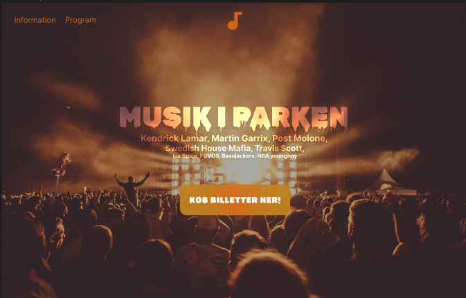ALBUMCOVER, KONCEPTER OG DIGITALE MEDIER
Et comeback album af selveste Rihanna, hvad mere kunne man ønske sig? En icon tilbage til early 2000s, nostalgien er noget helt særligt. Se nærmere om hvordan vi taklede dette projekt af musikgenren pop.
CASE RESUME
Formål
Ved brug af koncepter, moodboards og designteorier skabe et albumcover med fokus på musikgenren pop.
Dette skulle opnås ved hjælp af Illustrator som læringsprogram, samt at kunne konceptudvikle.
Proces
Eftersom at have valgt en sanger vi ville tage udgangspunkt i, kom vi med nogle idéer ved at kigge på hendes tidligere album. Her lavede vi moodboards, til at komme frem til den vibe vi ville gå efter. Skitseringen af albumscoveret som vi efterfølgende ville lave på Illustrator.
Ved brug af hendes tidligere arbejde, startede vi designprocessen og brugte den vibe fra brainstorming og dannede albumscoveret, LP-coveret og meget mere..
Resultat
Albummet og LP-coveret kom ud som vi havde skitseret, med den vibe fra moodboardsne vi lavede. De mørke farver blandet med den dybe røde og blå farve skabte en form for good and bad, som var det vi gik efter.
Designet af albummet brugte vi også til alt andet som vores spotify cover og billboard mockup. Men for vores landingpage valgte vi at bruge hendes eget design som hun allerede har kørende, da det vil distrehere for meget at have temaet på alt.
PROCES
Til at starte med lavede vi en brainstorming af alt vi kunne komme i tanke om der relaterede os til genren popmusik. Alt som Miley Cyrus, y2k, Eminem, fest og romantik kom på spil. Efter dette valgte vi i gruppen at udpege nogle af de sangere vi skrev ned i brainstorming, og begyndte at stemme på hvilken vi helst ville arbejde med. Vi valgte til sidst at have om Rihanna at gøre, da vi alle kunne lide hendes musik, og voksede op med det.
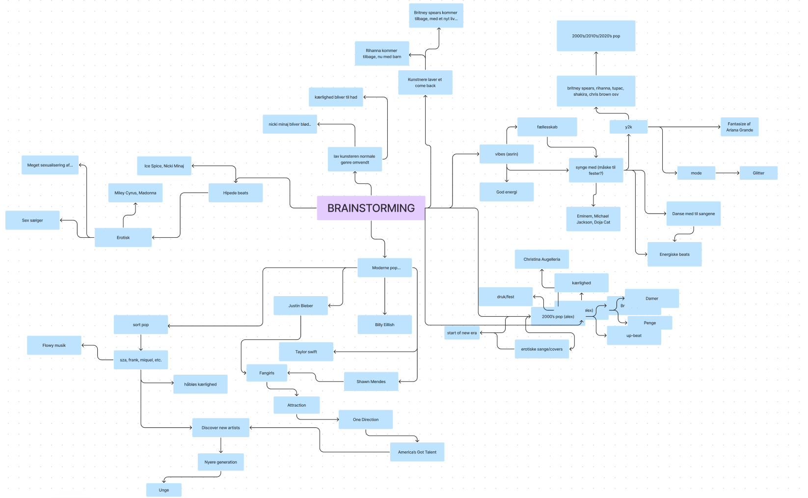Vi blev enige om, at Rihanna havde brug for et comeback album, som præsenterede hende som denne "new woman" era, da hun for nyligt er blevet mor til hendes barn med ASAP Rocky. Nu denne persona om "bad girl" blevet god. Da hun allerede havde en album om "good girl gone bad", kom jeg med idéen om at shuffle med ordene og navngivede albummet "bad gone good". For denne nye persona som Rihanna skulle præsenteres for, krævede det lidt inspiration. Her brugte vi hendes egne billeder hvor den røde farve skulle forstille hendes "bad girl" era, og den blå farve hendes "good girl" era.
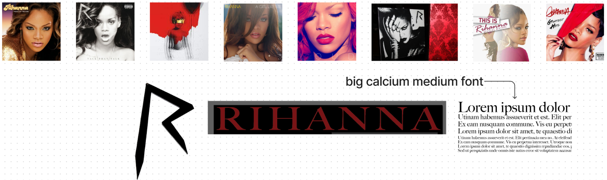 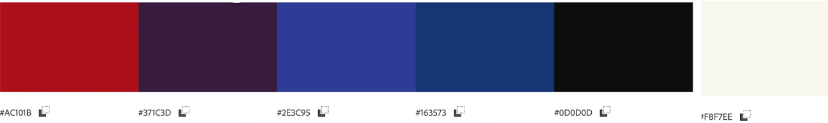Her kiggede vi på hendes tidligere albums og den overskrift vi ville bruge. Alt efter hvilken font, og farvekode noterede vi ned i et fælles FigJam fil. Der skitserede vi også i hånden om den idé vi havde.
Her var der nogle eksempler på de albumcovers vi fik lavet. Derudover skitserede vi også vores wirefarme til vores landingpage hvor man kunne bestille noget merch. Men vi valgte at fjerne det og gå ud efter en landingpage der mest lignede hendes, så det kunne relatere tilbage til hendes eget.
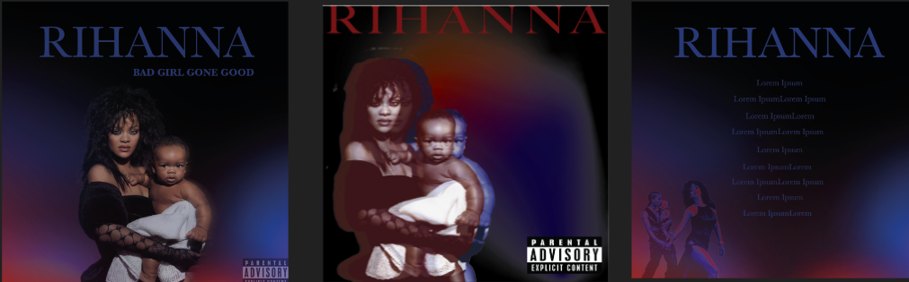 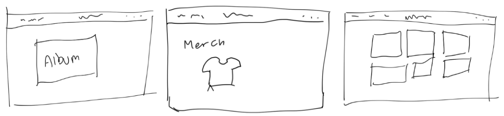
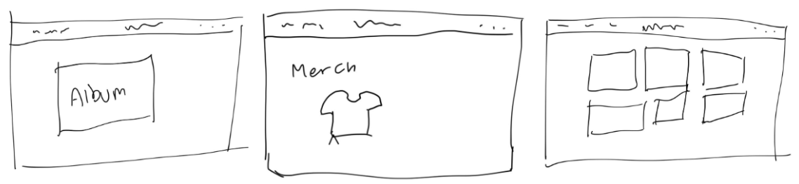
RESULTAT
Her ses alle vores resultater, fra album- og LP-covers, landingpage, spotify cover og billboard mockup. Der blev brugt den samme design med alle, undtagen landingpagen da den forstille sig hendes egen hjemmeside, som har et andet tema.
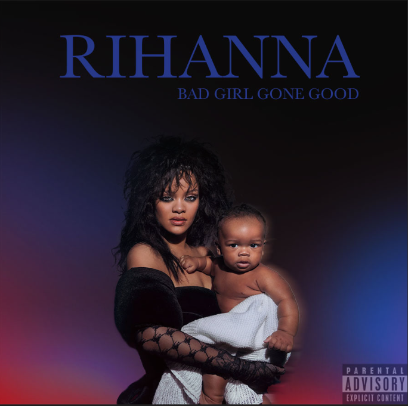 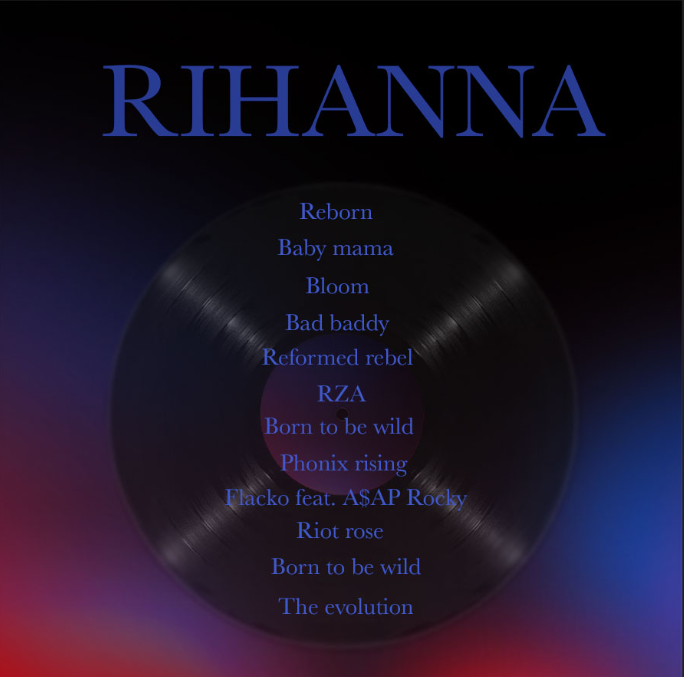 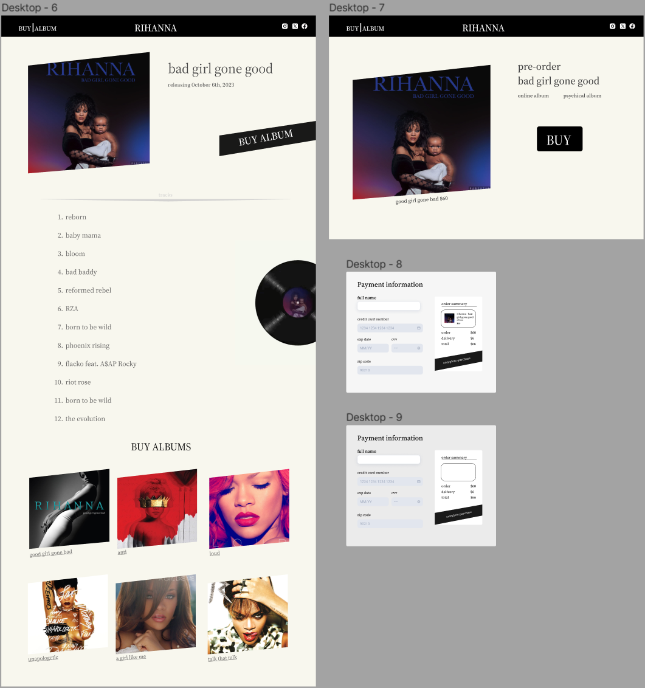 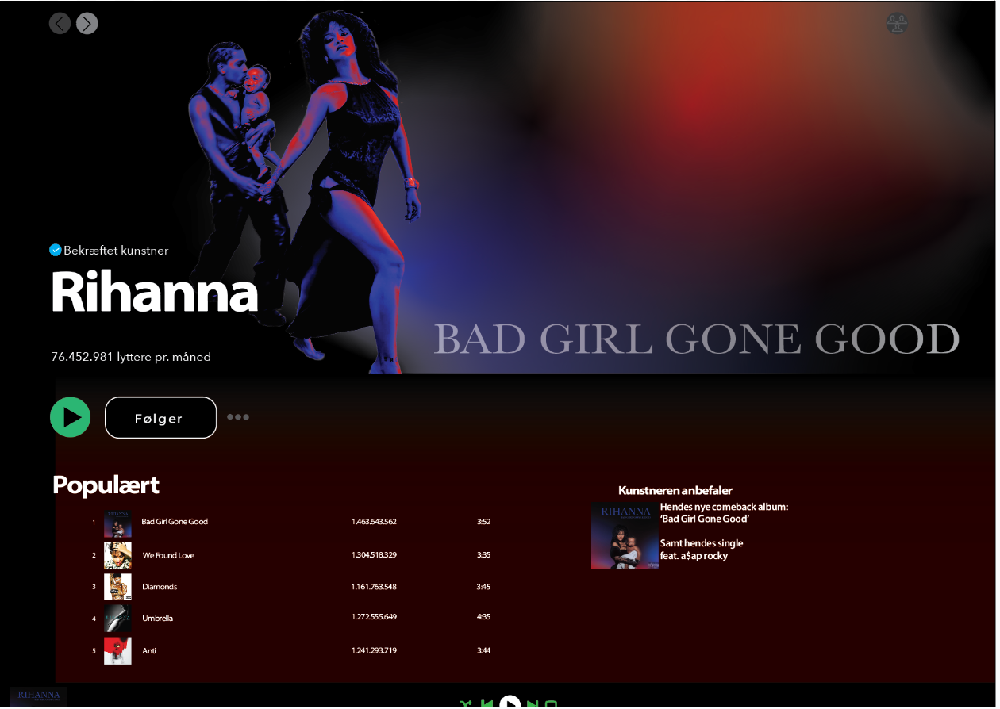MOBILE FIRST PRINCIPPET - WEBDESIGN MED HTML/CSS
Webudvikling med udgangspunkt i reponsivt design. Kig nærmere for at se hvem fra Folketinget og deres parti jeg valgte at arbejde videre med, og lavede en hjemmeside for.
CASE RESUME
Formål
Vælge en fra Folketinget som skulle have en hjemmeside der responsivt, med Mobile First princippet. At kunne kode en hjemmeside vi selv måtte vælge skulle handle om.
Bruge HTML og CSS til at designe og danne et funktionelt hjemmeside, med undersider.
Proces
Kiggede på de forskellige folketingsmedlemmer og valgte at tage udgangspunkt i Monika Rubin. Brugte den samme tema hun havde kørende, da for mig var det vigtigt at kunne se om jeg kunne lave lidt af det samme som hun allerede havde, men alligevel også lidt anderledes.
Under kodedelen brugte jeg Youtube og Linked-in learning for at lave siden responsivt, samt bruge viden fra undervisningen. Brugte nogle af de elementer hun havde på hjemmesiden, og gav det lidt af min egen design.
Resultat
Meget enkelt og simpelt som var det jeg gik efter. Dog brugte jeg den farvetema hun havde kørende, og at lidt af den design hun havde kørende som ikke vil tage autentiteten væk fra selveste hjemmesiden jeg lavede.
PROCES
Lidt research omkring folketingsmedlemmer, hvor Monika Rubin stod mest ud for mig. Formålet var for mig, at finde én som ikke var ligeså kendt blandt andre studerende, så jeg fik lov til at arbejde med én som ikke højt sansynligt ville blive arbejdet med. Monika Rubin var den perosn for mig. Jeg gik ind på hendes hjemmeside, og spekulerede lidt om hvordan jeg ville takle denne opgave. Her valgte jeg at beholde den tema hun havde kørende, og fokusere på kode-delen, så jeg kunne forbedre min kodning.
Den første kode jeg lavede var forsiden, som jeg navngivede "index.html", for at sikre at webbrowsere kan genkende at det forsiden på min kodning.
Derefter lavede jeg min undersider, da kravet var at have mindst to undersider til hjemmesiden. Her valgte jeg at tage fokus på to af de vigtigste sider, som var hendes mærkesager, samt en underside hvor man ville kunne kontakte Monika Rubin.
RESULTAT
Her kan man se hjemmesiden hvis det lyster, både design og funktionalitet er taget højde for.
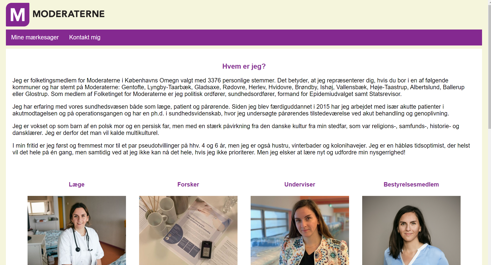SOME PRODUKTION PÅ TVÆRS AF PLATFORME
En landingpage og videoproduktion af brandet ELF Cosmetics, som har om cirkulært økonomi.
CASE RESUME
Formål
Storytelling, storyboards, filmiske virkemidler er alle grunddelen af dette projekt. Formålet er om at finde et brand hvor der foregår cirkulært økonomi, så man som brugere kan være med til en grønnere verden.
Her skulle vi bl.a. lave tre videoer, med forskellige varihed, en på 5 sekunder, 15 og 30 sekunder. Disse videoer skal kunne bruges på SoMe platforme vi selv måtte vælge. Derudover skulle vi også lave en landingpage til dette brand, ved hjælp af HTML og CSS.
Proces
Til at starte med lavede vi en lille voteringsproces eftersom at have listet flere brands. Vi blev enige om et makeup brand ELF Cosmetics. Derefter lavede vi skitsering af storyboards, shotliste og begyndte på at filme videoer af makeuppen.
Vi fik dannet en styleguide om de designprincipper, farver og typografi. Og persona som ville hjælpe os at komme frem til den design som projektet skulle have, samt målgruppen.
Resultat
5 sekunders videon blev et banner for vores hjemmeside, hvor videoen kørte på loop i toppen af vores landingpage. Derefter havde vi vores 15 sekunders video som skulle være en reklamevideo til Facebook med musik i baggrunden. 30 sekunders videoen var lidt mere personligt, da der både var tale og var til TikTok.
Vores landingpage blev lidt inspireret af deres hjemmeside, men mere simpelt da deres hjemmeside virkede meget rodet. Formålet her var at forenkle det, så det nemmere at navigere rundt i og letlæseligt.
PROCES
Til at starte med lavede vi vores projektplan, altså WBS. Her står alt som hvor meget vi brugte på brainstorming, personas, produktion, design af landingpage osv. Dette var for at give en idé om hvad vi skulle bruge vores tid på, så vi kunne udføre denne opgave bedst muligt.
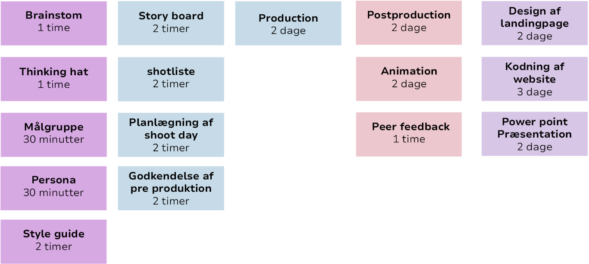Til venstre bestemte vi for hvilke brands vi ville arbejde med, hvor vi blev enige om fem forskellige. Der var mange stemmere på e-cooking, men da vi synes vi hellere vil arbejde med et brand som var åbent til en større målgruppe, valgte vi ELF Cosmetics. Efter dette, lavede vi en styleguide, alt efter typografi, farvekode og desingkoncept fra deres eget hjemmeside.
 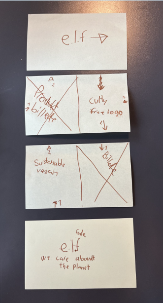
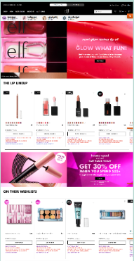
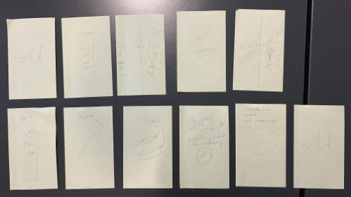
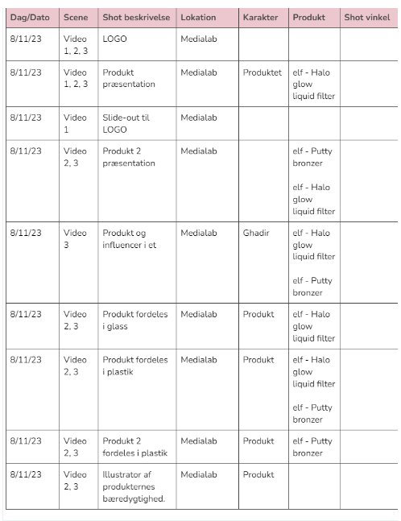
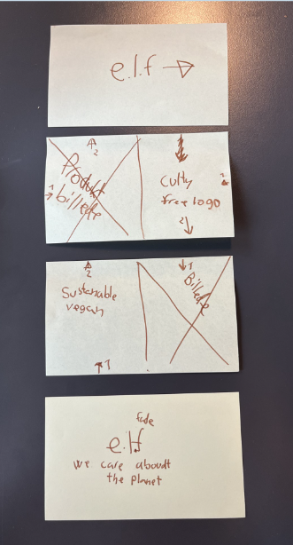
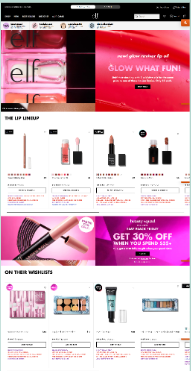
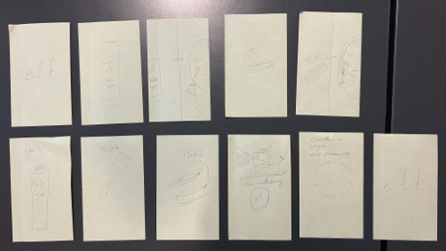
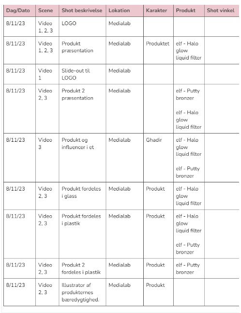
Derefter begyndte vi at lave en storyboard som skulle hjælpe os med videoproduktionen. Altså hvad der skulle foregå på hvert klip, og at der eksempelvis skulle være et klip til sidst med logoet, som går at seerne ved, hvilket brand der tale om. Her valgte vi at inddrage bæredygtigheden ind i videoerne, så det rammer den rigtige målgruppe.
Øverst til højre kan vi se ELF Cosmetics egen hjemmeside, som vi gjorde brug af ift. at lave vores landingpage. Shotlisten kan også ses nederst til højre, hvilke dage og hvor henne vi valgte at filme selveste videoerne.
RESULTAT
For at se alle videoer, og landingspagen kan du trykke på deres billede her nedenunder, som vil føre dig til arbejdet.
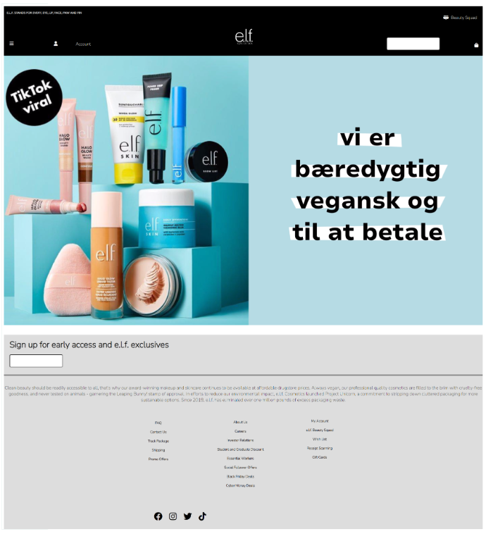